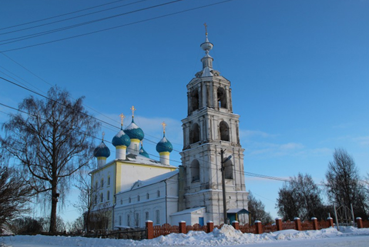

Одна из легенд гласит, что во время монголо-татарского нашествия на Русь здесь, якобы, располагалась резиденция хана Кияса. Шатра ханского не стало, а название прилепилось: Киясова гора. Со временем трансформировалось оно в Кесову. Хана Кияса кесарем величали на манер императорского титула. Версий немало: лишь одна величина постоянна - гора, по уступам которой и разметалось, растеклось Кесовогорье, вобрав в себя три бывшие деревни.
Площадь района – 962 км2
Численность населения (на 01.01.2018 г.) – 7617 чел., в т.ч.: городского - 3717 чел., сельского - 3900Численность избирателей (на 01.01.2018) – 6496
чел.